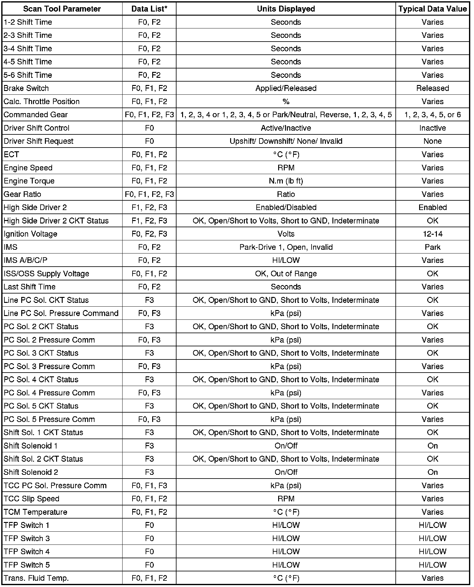
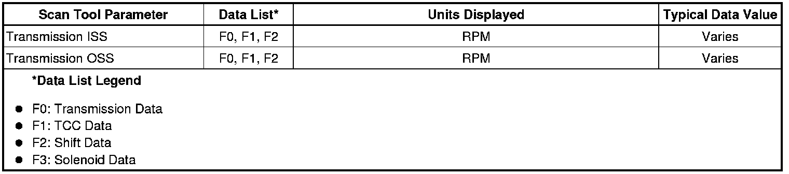

Scan Tool Data List
Scan Tool Data List
Use the Scan Tool Data List under the following conditions:
* The Diagnostic System Check - Vehicle is complete.
* The on-board diagnostics are functioning properly.
* No diagnostic trouble codes (DTCs) are present.
The values below represent a typical display recorded from a properly functioning system.
Important: Do not use a scan tool that displays faulty data. Report the condition to the scan tool manufacturer. The use of a faulty scan tool can result in misdiagnosis and the unnecessary replacement of parts.
Only the parameters listed below are used in this manual for diagnosing. If a scan tool displays other parameters, the values are not recommended by General Motors for use in diagnosis.
Scan tool values below were recorded under the following conditions:
* Engine at idle
* Upper radiator hose hot
* Closed throttle
* Transmission in PARK
* Closed Loop Operation
* Accessories OFF
* Brake pedal not applied

